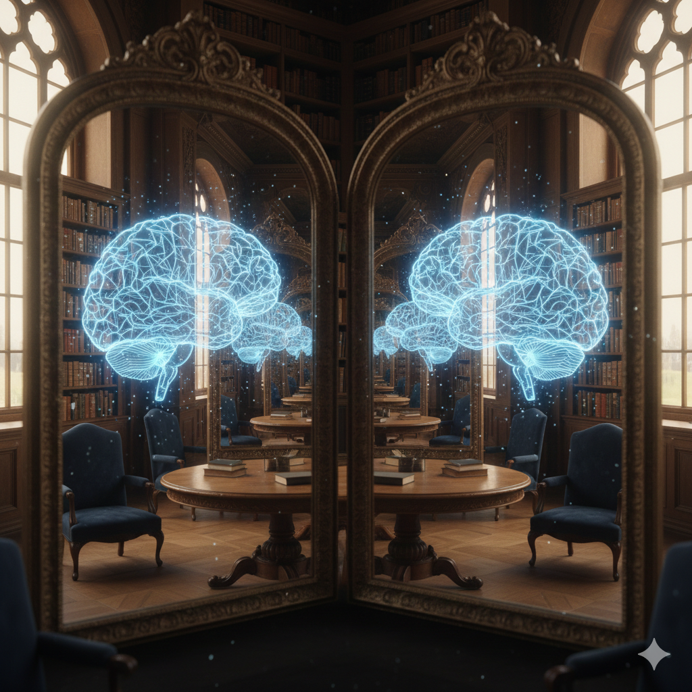

Posted on February 5, 2026
This post picks up where my post on Consciousness and Emergence left off—specifically, why I don't believe in strong emergence, and where that leaves consciousness in the picture.
I don't believe strong emergence can lead to causal powers. Consider a tornado. It's a real, recognizable pattern in the world—powerful, destructive, awe-inspiring. But there's no "tornado force" acting above and beyond the physics of air molecules, pressure, and temperature. A tornado is just what those molecules do when conditions are right. It's a useful higher-level concept for a particular pattern of physical stuff, but it doesn't have any causal powers that aren't already accounted for by the fundamental physics.
I think the same is true of life. "Life" is a higher-level concept we use to describe certain systems, but it doesn't have any causal powers above and beyond what the fundamental physics would say is going to happen. And the science increasingly backs this up. We're getting a better and better understanding of simple lifeforms that explains their behavior, characteristics, and everything about them in terms of more fundamental physics—i.e. weak emergence.
Mycoplasma genitalium, for example, has one of the smallest genomes of any free-living organism—only about 525 genes. In 2012, a Stanford team built the first complete whole-cell computational model of it, modeling every molecular interaction across its entire life cycle. The model effectively predicted the cell's growth dynamics, chemical composition, metabolic fluxes, metabolite concentrations, and gene expression—basically everything about the lifeform, predicted from the bottom up, molecule by molecule. Life—like a tornado—is what physics does when the parts are arranged a certain way.
It really is super cool what simple constituents can do when combined. But it still seems to me like it's all just physical stuff that our theories of physics can in principle predict. The key caveat being "in principle"—in practice, our theories can't predict much more than how a handful of particles will bump into each other. But the inability to predict in practice doesn't mean some new non-physical causal power is popping into existence at higher levels of complexity.
Reconciling this aversion to strong emergence with how consciousness fits into the picture is what leads people like me to radical ideas like Russellian monism. If it's all just physics, and physics doesn't seem to account for first-person experience anywhere, then maybe the issue isn't that something extra emerges at the top—maybe it's that something is missing from the description at the bottom.
But if consciousness is real and not just another pattern like "life" or "tornado," then what is its relationship to the physical world? I think there are really only three options:
Option 1: Consciousness is causally inert (epiphenomenalism). Consciousness exists but doesn't do anything. The physical world runs according to physics, and consciousness is a byproduct—real, but powerless. This means your feeling of pain isn't what causes you to say "ouch." The physics causes both the feeling and the utterance independently.
Option 2: Consciousness intervenes on the physical (interactionist dualism). Consciousness is non-physical and causally affects the physical world—pushing neurons around, influencing decisions. The problem: how? At what point does the non-physical interact with the physical?
Option 3: Consciousness is the physical, just described differently. There's only one causal chain. Physics describes the relational structure, and consciousness is the intrinsic nature of the stuff doing the causing. When your neurons fire and you say "I'm conscious," the physics is correct—but the thing doing the causing is experiential in nature.
Option 3 is where I've wanted to land. But the more I think about it, the less sure I am that it holds together.
If physics gives a complete predictive account of what will happen—every particle, every neuron, every mouth movement—then what work is consciousness actually doing?
We humans spend a lot of time talking about consciousness. We write philosophy papers about it. We find it deeply puzzling. I'm writing this blog post about it right now. Under Option 3, the reason I'm writing this should be fully explainable by physics—by the causal chain of particle interactions that led my fingers to type these words. No reference to "what it's like" needed.
But then: why do those neurons produce talk about the "mystery" of consciousness? If the physical description is sufficient to explain why I say what I say, and that description doesn't reference any subjective quality, then our talking about consciousness looks like a bizarre coincidence. The physics made us talk about something that, from the physics' perspective, doesn't need to exist.
One response is that our brains are self-referential systems, and consciousness is just what self-modeling is from the inside. But this starts to sound like illusionism—consciousness isn't really mysterious, we just think it is. And that's exactly what I was trying to avoid.
This tension has a name. In 2018, David Chalmers introduced the meta-problem of consciousness: the problem of explaining why we think there is a hard problem.
The hard problem asks: why is there subjective experience? The meta-problem asks: why do we say and believe there's a hard problem? Why do certain brain configurations produce beings that write philosophy papers about the explanatory gap?
The meta-problem is a physical question. Whatever the answer to the hard problem turns out to be, there must be some physical explanation for why brains produce utterances like "I have subjective experience." Chalmers argues that solving the meta-problem doesn't dissolve the hard problem—explaining why we say "ouch" doesn't explain why it hurts. But it puts pressure on everyone: if you can give a complete physical account of why we talk about consciousness, you have to wonder whether the talking is evidence that consciousness is real, or just evidence that brains produce that kind of talk.
I'm not sure Option 3 holds together as cleanly as I'd like. If physics is causally complete, and consciousness is just "what the physics is like from the inside," it's hard to see how consciousness plays any genuine role in why we talk about it. And if it doesn't, we're back to epiphenomenalism or illusionism—both of which I find deeply unsatisfying.
Which is why ideas that once sounded like they belonged in the loony bin start to seem less crazy. Chalmers and McQueen have a paper exploring the idea that consciousness might actually collapse the quantum wave function—that conscious observation plays a real, physical role in determining quantum outcomes (Consciousness and the Collapse of the Wave Function). They combine integrated information theory with a model of quantum collapse dynamics and argue that while simple versions of the theory are falsified, more complex versions remain compatible with empirical evidence and could in principle be tested with quantum computers.
That's Option 2 territory—consciousness actually intervening on the physical. I'm not endorsing it. But the more I sit with the tension in Option 3, the more I understand why serious philosophers are willing to entertain it. If consciousness is real, and it's not causally inert, and we can't quite make sense of how it fits into a causally complete physics—then maybe physics isn't quite as causally complete as we thought.
The meta-problem makes it clear that something needs explaining—either why consciousness exists, or why we're so convinced it does. Neither answer is easy.